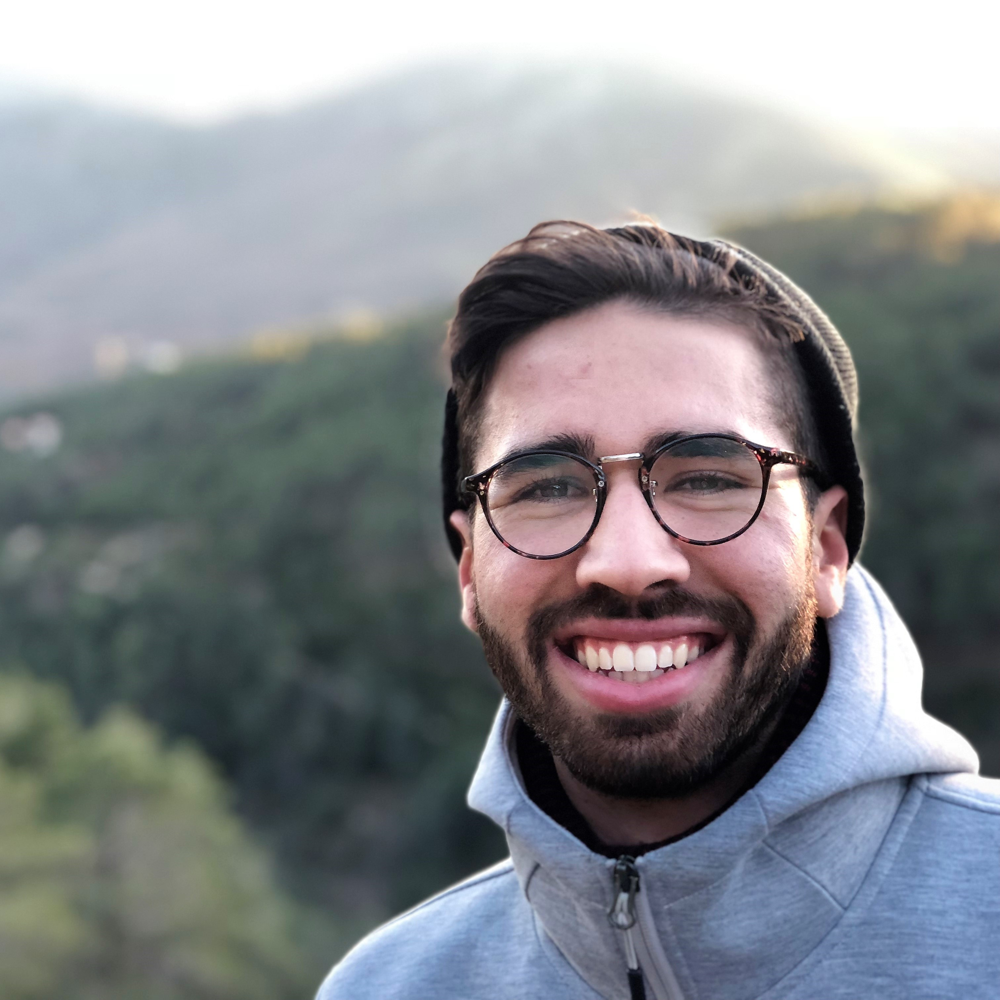
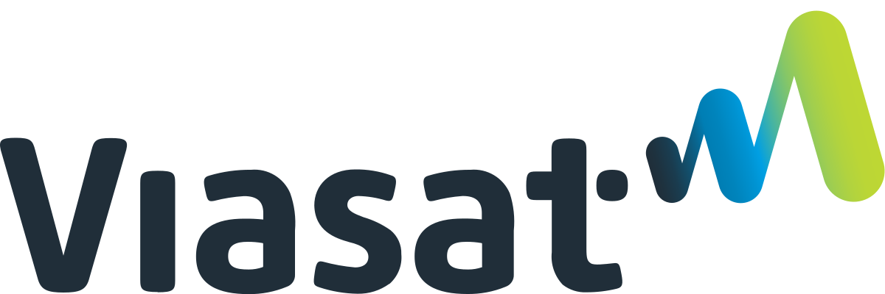
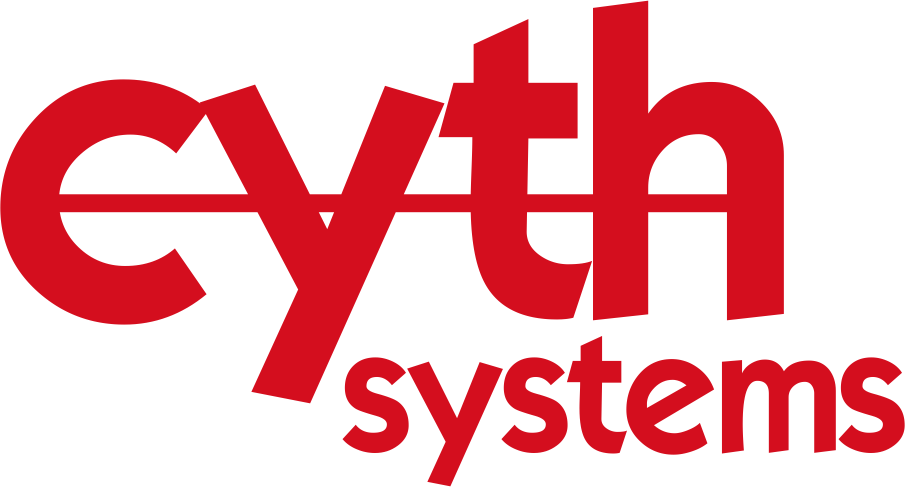

Alan Josué Beas

Software Development Engineer in Test
Experience
Platform Science, Inc.
Software Development Engineer in TestApril 2023 - January 2024
- Developed and maintained automated test suites for web APIs and mobile applications, reducing manual testing efforts by 50%. Used Pytest, BDD, Appium, Selenium, Docker, Postman, Jenkins, Laravel, and Testrail.
- Implemented a filtering feature to route engine data packages of interest to an internal endpoint for further processing. Applied expertise in Laravel, PHPUnit, API testing, and proficiently utilized containerization techniques.
- Analyzed software technical debt and composed planning to ensure comprehensive test coverage and alignment with development goals.
- Conducted performance tests on AWS-hosted API services. Communicated performance metrics using Grafana K6, facilitating data-driven decisions and ensuring optimal system performance.

Viasat, Inc.
Systems Test EngineerNovember 2021 - April 2023
- Created custom software tools and scripts to enhance testing automation and efficiency of military radio terminals.
- Devised an internal link-16 waveform test driver, written in C++ and C#, to yield 20% shorter testing periods of new product release builds.
- Designed system-level tests for network performance using Pytest framework. Included testing end-to-end performance, latency, throughput, scalability and reliability of messages traveling through a network.
- Integrated Specialized Test Equipment with proprietary link-16 capable radio terminals which encompassed knowledge of TCP/IP networking, SCPI, USB, Serial Port, GPIB, PCIE, Ethernet networking and distributed systems.

Cyth Systems, Inc.
Systems Integration Engineer / LabVIEW ProgrammerFebruary 2019 - November 2021
- Managed various test automation projects, across different industries, including full-scale automation systems and compliant technical documentation (design requirements list, weekly PSRs, ECOs, user’s manuals, FAT, and SAT).
- Crafted and documented system integration tests that validated start-to-finish processes, confirmed customer specifications and satisfied user requirements.
- Headed and implemented a data acquisition application for inspecting and validating resistance gold standards utilized in glucose monitoring devices. Leveraged camera peripherals, DAQs, and LabVIEW application.
- Developed LabVIEW and Python internal libraries, user authentication systems and UI’s using architectures like producer-consumer.

UCSD Recreation
IT SpecialistDecember 2017 - August 2018
- Constructed a full-stack internal application for UCSD athletic trainers to track student-athlete walk-ins, cut down on administration tasks and digitize annual injury reports.
- Composed the application using HTML/CSS/JS, PHP, and MS SQL Server to manage entries and windows user groups.
- Provided technical support and guidance regarding the use of software for UCSD staff and directors of athletics.
- Communicated timelines across two recreation departments while collaborating daily with a three-member IT team.
Skills
- Technical : Agile/Scrum/Kanban, Appium, Automated Testing, Automation, AWS, BDD, Confluence, C#, C++, Docker, Database Management, Data Analysis, GIT, Google Suite, Gherkin, Grafana K6, HTML/CSS, Jenkins, JIRA, LabVIEW, Linux, Microsoft Suite, Network Protocols, Network Debugging Tools, OneDrive, REST API, Selenium, Shell Scripting, SQL, Software Engineering, Software Testing, Python, Pytest, Pandas/Numpy/Scipy, TestRail, Typescript
- Relevant Coursework : Advanced Data Structures, Advanced Digital Design, Algorithm & Systems Analysis, Artificial Intelligence: Search & Reason, Computer Operating Systems, Design & Analysis of Algorithms, Design for Development, Intro to Computer Security, Software Engineering, Software Tools, Systems Programming
- Spoken Languages : English (fluent), Spanish (fluent)
Certifications
National Instruments
- Certified LabVIEW Developer (CLD)
- Certified LabVIEW Associate Develper (CLAD)


Projects
Brain-Computer Interface Game
Team Size: 4January 2018-March 2018
- Using a Neurosky headset to control the game 2048 in hope of being able to play the game hands-free
- This project helped us get a grasp on the technology of BCI and how to get brain signals into tangible computer systems
- Link to presentation and live demo (Google Slides, Project Repository)
Elevator System with LabVIEW
Team Size: 3September 2017-December 2017
- Quarter-long project putting together an elevator system from laser-cut plywood, 3D printed parts, an IR sensor, a brushless motor, and servos
- Programmed a state-machine implementation in LabVIEW to complete the elevators level control system
- Link to presentation, implementation, and more images (Google Slides)


Design for Development
Team Size: 8September 2017-December 2017
- Designed a solution for a local non-profit organization that included solar powered security cameras and lights necessary for a garden office
- Focused on efficient human-centered design methods, contextual listening, project management, stakeholder analysis, needs and capacity assessment, and sustainable community development
- Link to Client Design Report (Google Docs)
SHA-256 Implementation with Verilog
Solo ProjectSeptember 2017-December 2017
- Designed a processor that can implement SHA-2 hashing algorithm using SystemVerilog, Intel Quartus and ModelSim
Leg Exoskeleton with Arduino
Team Size: 5January 2017
- Built an inexpensive exoskeleton using Arduino to aid leg movements for potential treatment of paralysis
- Programmed two stepper motors to carefully match the patients EMG muscle sensor signal input in order to smoothly aid the movement of the hip and knee during sitting, standing and walking
- Achieved second place after presenting and showcasing our project to judges for the REACH 24-hour Competition at UCSD
Education

Universidad Complutense de Madrid, Spain
Study Abroad ProgramAugust 2018-January 2019
- Acquired new world perspectives and cross-cultural skills
- Improved interpersonal skills and obtained life-long connections
- Studied diverse world topics in order to become a contributor to the world's social, political, economic and technological developments

University of California, San Diego
B.S. Computer EngineeringSeptember 2014-June 2018
- Collaborated on innovative projects applying advanced tools and technologies to engineering solutions
- Explored the theory behind technological systems and what can be done to make them smarter and more efficient
- Bridged hardware and software by designing digital processing systems in the class setting